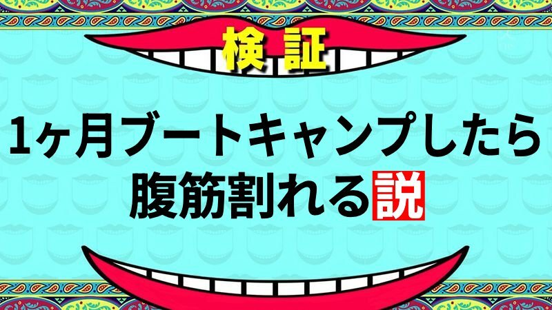

山本は中学生の時まではバスケをしていて、シックスパックだった。
しかし今では、体重は60gになり、腹筋は割れていない。
四ヶ月後に迫った大学でモテモテになるために、筋トレをすることを決意！

山本が取り筋トレの方法として選んだのは、ダンス。いろいろなダンスを踊ってみます。


山本は中学生の時まではバスケをしていて、シックスパックだった。
しかし今では、体重は60gになり、腹筋は割れていない。
四ヶ月後に迫った大学でモテモテになるために、筋トレをすることを決意！

山本が取り筋トレの方法として選んだのは、ダンス。いろいろなダンスを踊ってみます。
山本はいろんなダンスで運動しました。


結構楽しかったし、痩せた気がするからダンスで筋トレはいいと思います！
これで大学でモテモテだ〜〜〜